More time for what matters
A five-minute injection instead of an hour in the chair — so the campaign never shows medicine. It shows overtime, coffee, listening.
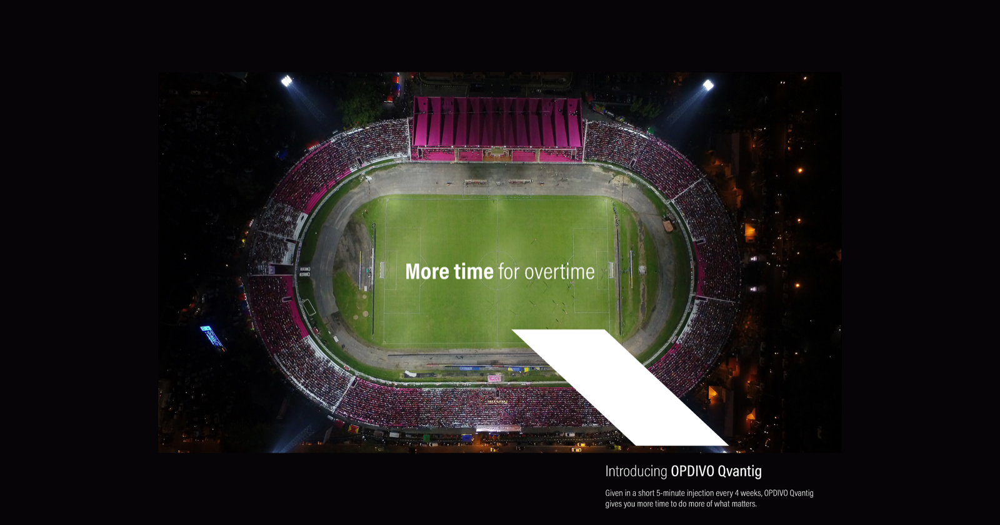
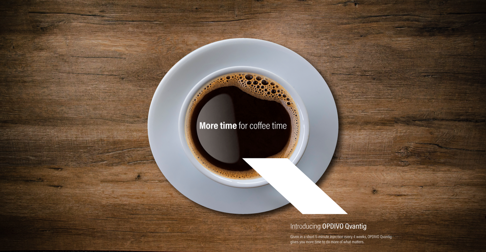
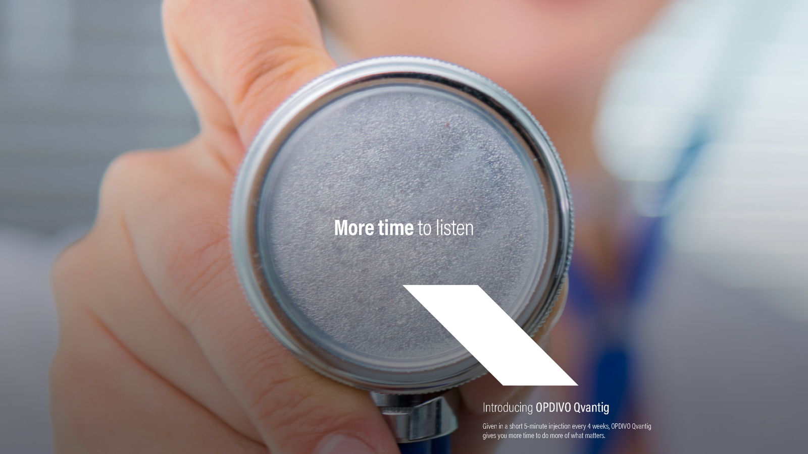
Crushes abuse. Dissolves dependency.
Abuse-deterrent technology, told with the objects of abuse themselves — crushed to powder, dissolved to nothing.
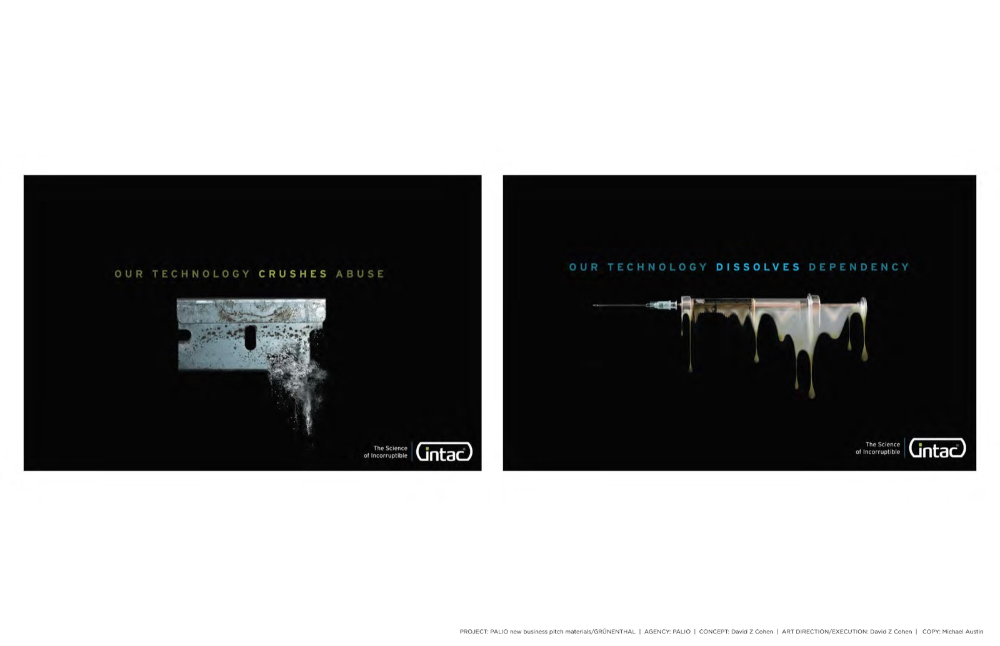
Make them see
SCD has been under-recognized, undertreated, stigmatized. Seeing is believing — so put it front and center.
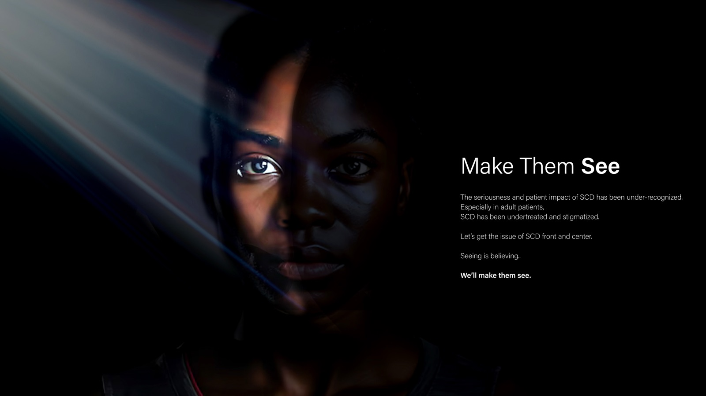
Awash in the glow of the unknown
An agency brand built on story: the usual all of a sudden seemed too ordinary.
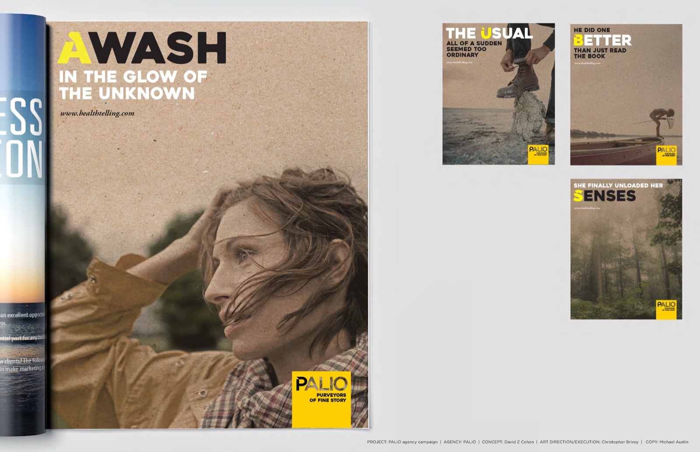
Let calm bloom
For hearts affected by HCM: restore a more natural order — the heart as rose, the heart as landscape.
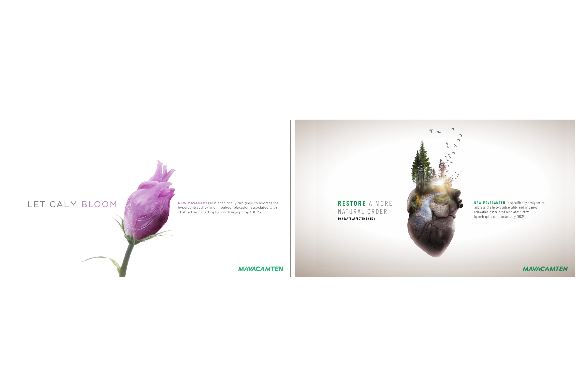
Distance from the next migraine
Prevention as space — put more distance between your patient and their next migraine.
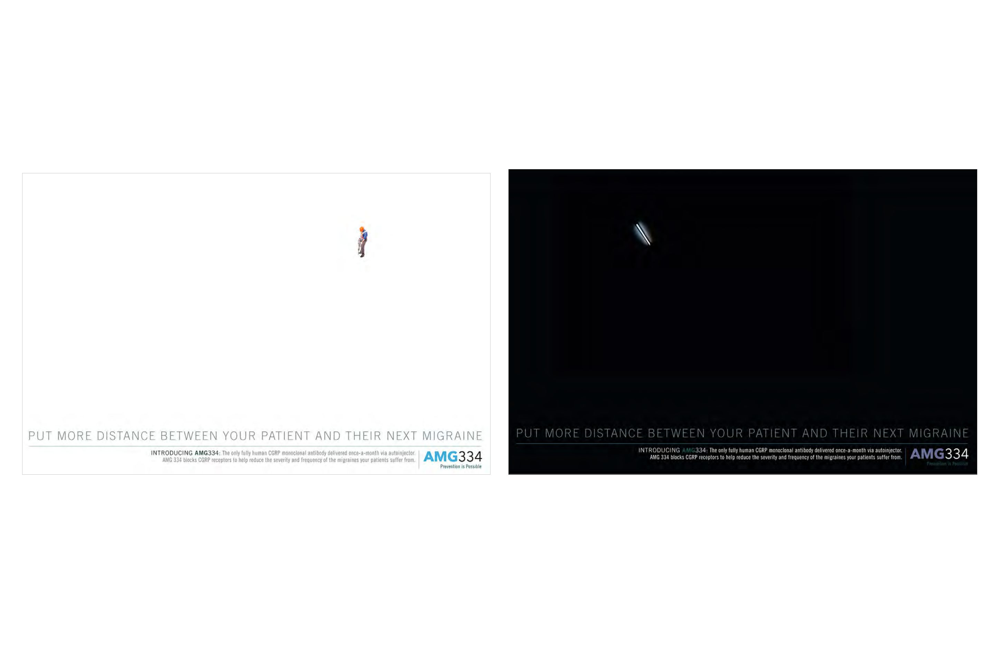
Life without interruptions
hATTR made visible through chromosome bands laid over everyday life — let her keep her touch.
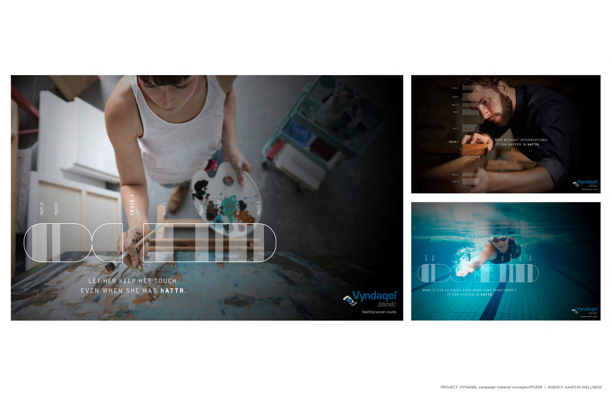
See what’s behind her AML
A revealing genomic biomarker — highlighter strokes uncover the patient behind the redaction.
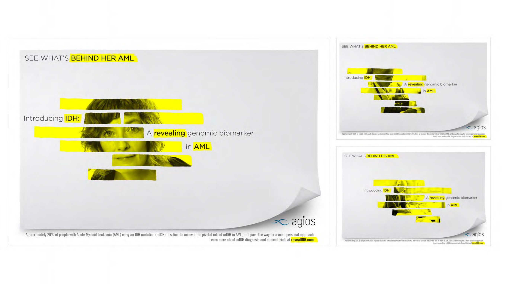
We’re at the point of pain
Migraine treated like a disease, not a headache — cymbal, filament, synapse: the exact point where it strikes.
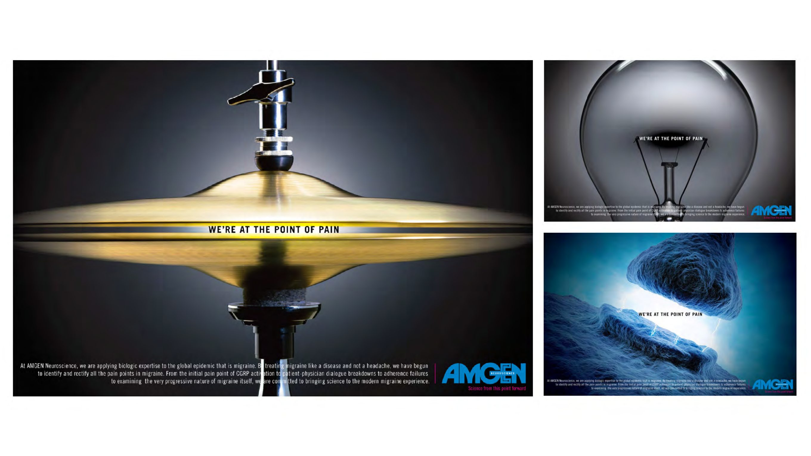